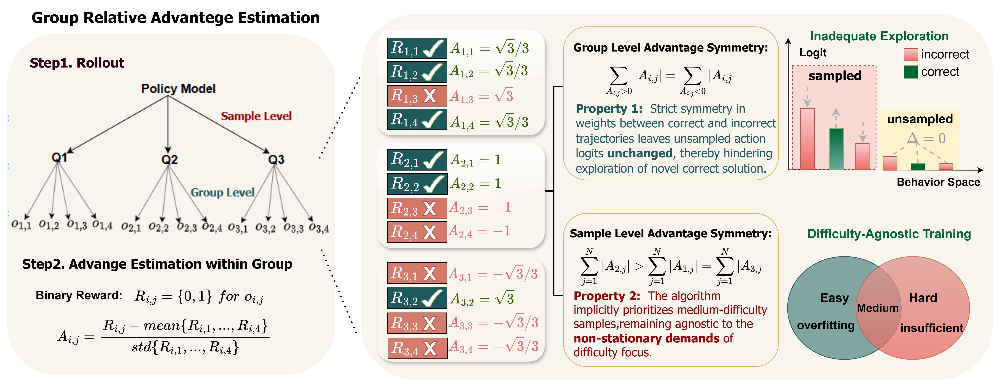
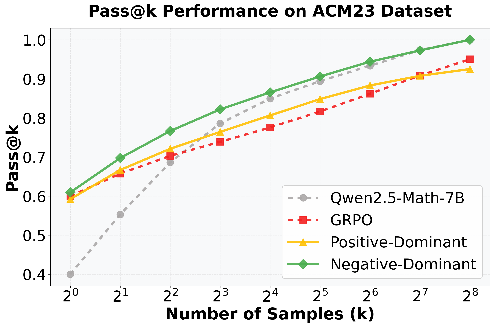
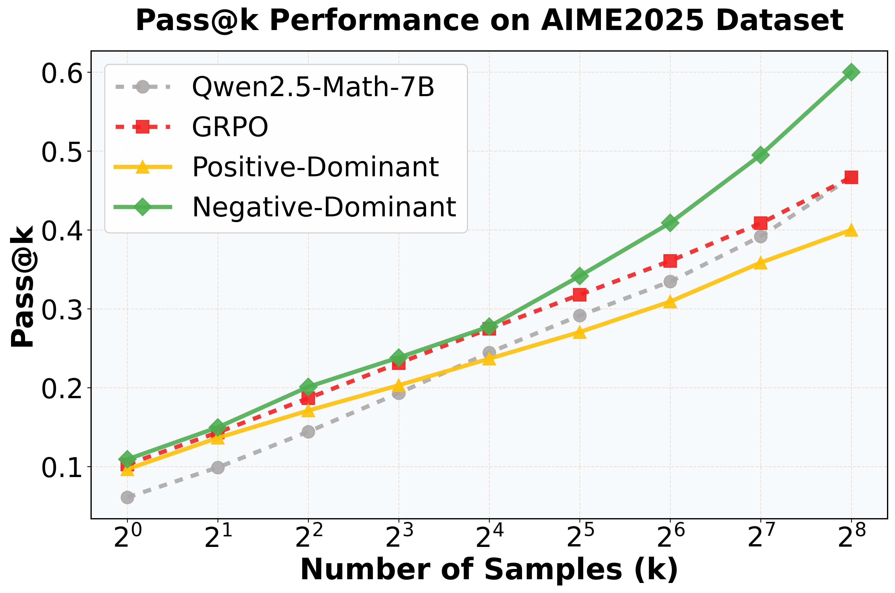
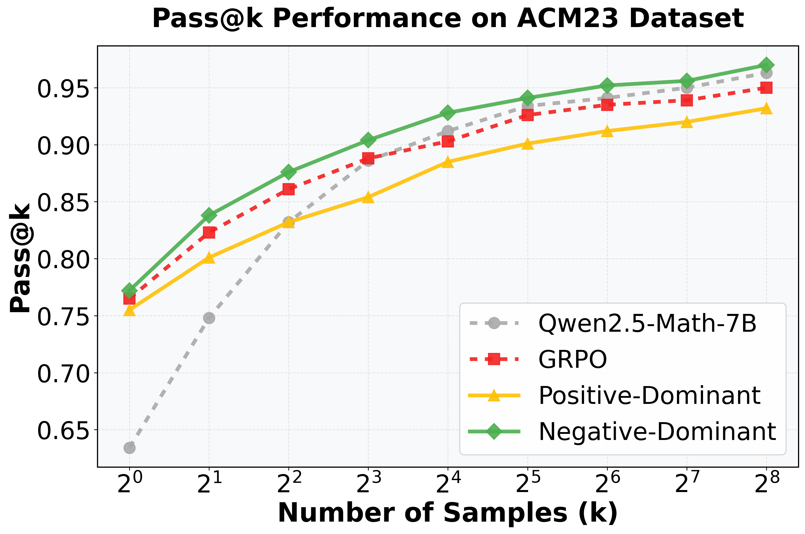
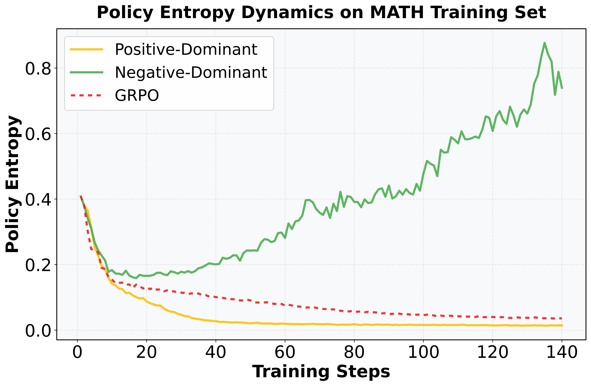
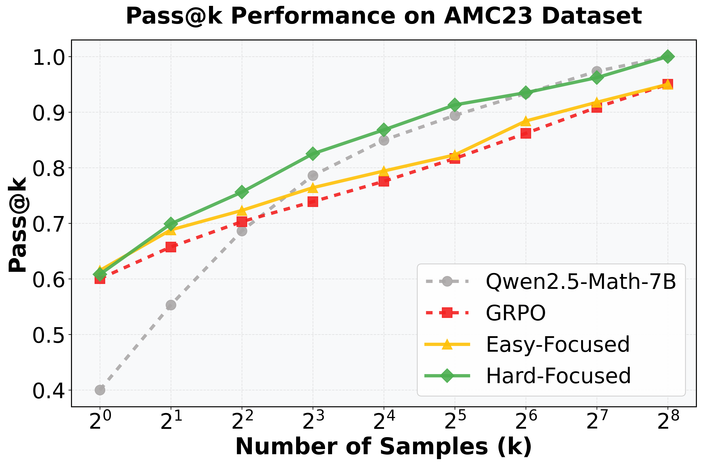
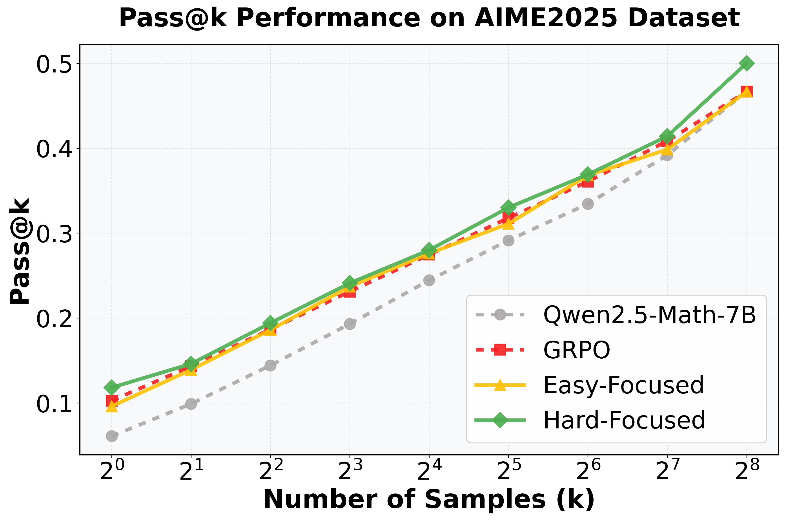
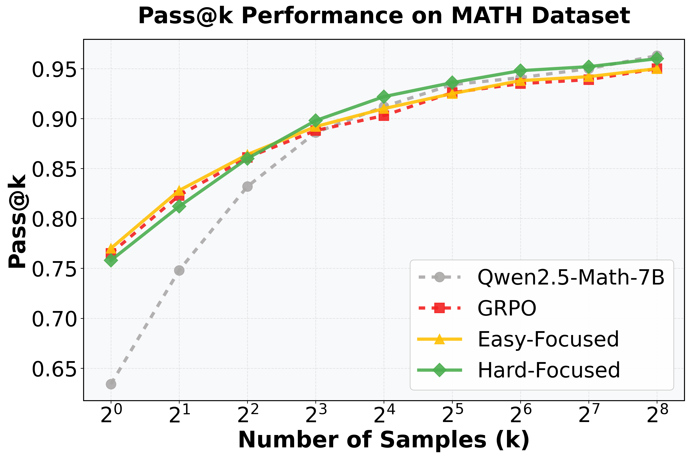
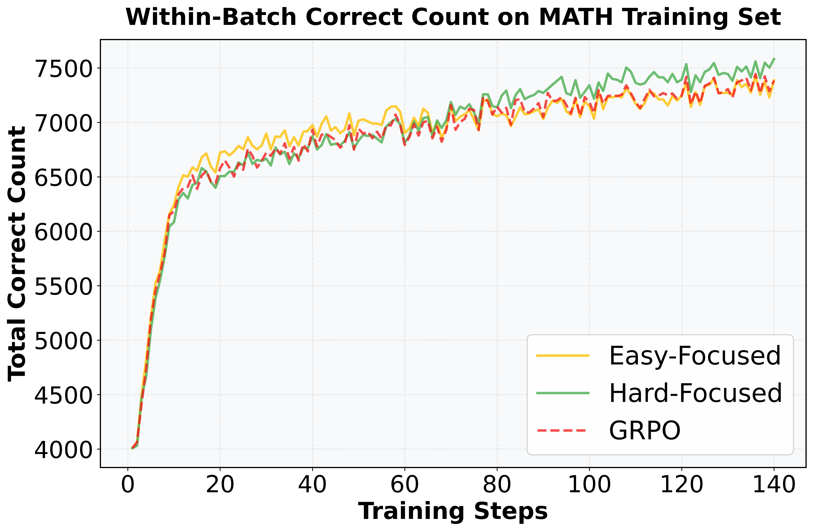

Reinforcement Learning with Verifiable Rewards (RLVR), particularly GRPO, has become the standard for eliciting LLM reasoning. However, its efficiency in exploration and difficulty adaptation remains an open challenge. In this work, we argue that these bottlenecks stem from an implicit advantage symmetry inherent in Group Relative Advantage Estimation (GRAE). This symmetry induces two critical limitations: (i) at the group level, strict symmetry in weights between correct and incorrect trajectories leaves unsampled action logits unchanged, thereby hindering exploration of novel correct solution. (ii) at the sample level, the algorithm implicitly prioritizes medium-difficulty samples, remaining agnostic to the non-stationary demands of difficulty focus. Through controlled experiments, we reveal that this symmetric property is sub-optimal, yielding two pivotal insights: (i) asymmetrically suppressing the advantages of correct trajectories encourages essential exploration; (ii) learning efficiency is maximized by a curriculum-like transition—prioritizing simpler samples initially before gradually shifting to complex ones. Motivated by these findings, we propose Asymmetric GRAE (A-GRAE), which dynamically modulates exploration incentives and sample-difficulty focus. Experiments across seven benchmarks demonstrate that A-GRAE consistently improves GRPO and its variants across both LLMs and MLLMs.

Figure 1. The two-fold implicit advantage symmetry problem of GRAE in GRPO. At the group level, the advantage weights for correct trajectories equal those of incorrect trajectories. This symmetry leads to the logits of low-probability correct paths unchanged within the behavior space, thereby hindering the model's exploration. At the sample level, samples of medium-difficulty exhibit the largest sum of absolute advantage values, which leads to insufficient training on harder data.




Figure 2. Experimental results on breaking group-level symmetry using Qwen2.5-Math-7B.
In the first three pictures, we amplify (Positive-Dominant) or suppress (Negative-Dominant) the advantages of correct trajectories to compare their performance with that of GRPO and the base model.
In the last picture, we monitor the entropy dynamics across the three groups during training. Notably, the Negative-Dominant group exhibits a monotonic increase in entropy except at the very beginning, while the other groups show the opposite behavior.




>Figure 3. Experimental results on breaking sample-level symmetry using Qwen2.5-Math-7B.
In the first three pictures, we rescaling the advantages to shift the learning focus toward harder queries (Hard-Focused) or easier queries (Easy-Focused) to compare their performance with that of GRPO and the base model.
In the last picture, we record The within-batch count of correct sampling responses on the training set. Easy-Focused exhibits the most rapid initial convergence during the early stages of training, whereas Hard-Focused maintains a sustained upward trajectory in the later phases, eventually achieving superior performance.
Our prior analysis reveals that the advantage symmetry inherent in GRPO undermines model exploration and difficulty adaptation. To address these limitations, we propose the Asymmetric Group Relative Advantage Estimation (A-GRAE) framework to dynamically modulate exploration incentives and sample-difficulty focus. To implement this, a metric is required to quantify training state; accordingly, we introduce the batch-wise mean reward as a proxy indicator:
where \(B\) denotes the total number of trajectories in the batch, \(\omega_s\) denotes the mean reward of the current step, where a higher value implies stronger model proficiency. Then we introduce a dynamic attention shift at the sample level, transitioning from easy to hard samples as training progresses:
where \(p\) denotes the sampling success rate for a given query. Note that rescaling is omitted when \(p\in\{0,1\}\), as the standard advantage equals 0. As the model evolves with increasing sampling success rate, the weight assigned to the hard-focused component (first term) progressively increases, while the corresponding weight for the easy-focused component (second term) diminishes. This mechanism facilitates adaptive trade-offs, dynamically shifting training focus to the hard questions as the model’s proficiency improves.
At the group level, we propose an attenuation suppression strategy for correct-response advantages, which encourages adequate exploration in the early training stage while preserving stability in the later phase:
Here, \(\alpha \leq 1\) is a scaling parameter. Once the refined advantages are computed, they can be seamlessly incorporated into the GRPO objective function, as defined in~\cref{eq:grpo}, or other GRPO variants for policy optimization.
Table 1. Pass@$k$ results on MATH, AIME 2025 and AMC23 with Qwen2.5-Math-7B. Bold and underlined numbers denote the best and second-best results for each $k$.
Our experiments cover GRPO variants (GRPO[1], DAPO[2], Dr.GRPO[3]) and state-of-the-art methods W-REINFORCE[4](addressing GRPO's insufficient exploration) and GRPO-LEAD[5] (tackling its difficulty adaptation).
| Method | Pass@$k$ | ||||||||
|---|---|---|---|---|---|---|---|---|---|
| $k$=1 | $k$=2 | $k$=4 | $k$=8 | $k$=16 | $k$=32 | $k$=64 | $k$=128 | $k$=256 | |
| MATH | |||||||||
| Base Model | 63.4 | 74.8 | 83.2 | 88.6 | 91.2 | 93.4 | 94.1 | 95.0 | 96.3 |
| GRPO | 76.5 | 82.3 | 86.1 | 88.8 | 90.3 | 92.6 | 93.5 | 93.9 | 95.0 |
| GRPO-LEAD | 77.8 | 83.0 | 86.5 | 89.2 | 90.5 | 92.3 | 92.8 | 93.6 | 95.0 |
| W-REINFORCE | 76.6 | 82.8 | 87.1 | 90.2 | 92.4 | 94.1 | 95.3 | 96.1 | 96.7 |
| GRPO + A-GRAE | 78.3 | 85.0 | 89.2 | 91.0 | 92.5 | 94.6 | 95.0 | 95.5 | 96.5 |
| DAPO | 75.0 | 79.8 | 85.0 | 88.4 | 89.8 | 92.0 | 92.8 | 93.4 | 94.3 |
| DAPO + A-GRAE | 76.9 | 82.6 | 86.5 | 89.2 | 90.6 | 92.8 | 93.6 | 94.2 | 95.3 |
| Dr.GRPO | 77.2 | 82.5 | 87.4 | 89.6 | 91.0 | 92.8 | 93.6 | 94.3 | 95.0 |
| Dr.GRPO + A-GRAE | 78.6 | 86.2 | 89.8 | 90.6 | 92.8 | 95.0 | 95.4 | 96.0 | 96.9 |
| AIME 2025 | |||||||||
| Base Model | 6.1 | 9.9 | 14.4 | 19.3 | 24.4 | 29.1 | 33.4 | 39.2 | 46.7 |
| GRPO | 10.3 | 14.3 | 18.7 | 23.1 | 27.5 | 31.8 | 36.1 | 40.8 | 46.7 |
| GRPO-LEAD | 11.0 | 14.8 | 19.2 | 23.4 | 27.8 | 32.0 | 36.5 | 41.4 | 47.3 |
| W-REINFORCE | 10.6 | 15.3 | 20.0 | 24.7 | 29.7 | 34.6 | 40.5 | 47.8 | 56.7 |
| GRPO + A-GRAE | 11.3 | 15.6 | 19.8 | 24.7 | 28.6 | 34.1 | 39.2 | 47.8 | 56.7 |
| DAPO | 12.0 | 16.1 | 21.3 | 25.2 | 29.4 | 33.2 | 38.5 | 45.4 | 53.3 |
| DAPO + A-GRAE | 13.3 | 18.4 | 23.0 | 26.3 | 30.0 | 35.1 | 41.1 | 48.7 | 60.0 |
| Dr.GRPO | 11.0 | 14.8 | 19.3 | 24.3 | 28.8 | 33.0 | 37.1 | 41.2 | 46.7 |
| Dr.GRPO + A-GRAE | 11.8 | 16.2 | 19.8 | 25.0 | 29.3 | 34.8 | 37.9 | 48.0 | 56.7 |
| AMC23 | |||||||||
| Base Model | 40.6 | 55.3 | 68.6 | 78.6 | 85.0 | 89.4 | 93.4 | 97.3 | 100.0 |
| GRPO | 60.2 | 66.7 | 72.1 | 76.4 | 80.6 | 84.8 | 88.3 | 90.8 | 92.5 |
| GRPO-LEAD | 62.3 | 68.0 | 73.3 | 77.8 | 81.5 | 85.0 | 88.2 | 90.3 | 92.3 |
| W-REINFORCE | 62.0 | 70.0 | 77.0 | 83.1 | 87.8 | 91.8 | 95.2 | 97.1 | 97.5 |
| GRPO + A-GRAE | 62.6 | 70.0 | 77.5 | 83.7 | 88.2 | 92.0 | 95.1 | 96.8 | 97.5 |
| DAPO | 62.0 | 70.3 | 77.2 | 83.1 | 87.8 | 91.4 | 94.0 | 96.1 | 97.5 |
| DAPO + A-GRAE | 63.3 | 72.5 | 80.5 | 86.7 | 90.2 | 92.9 | 95.0 | 97.0 | 100.0 |
| Dr.GRPO | 60.7 | 69.8 | 75.6 | 82.6 | 87.8 | 90.9 | 93.2 | 94.6 | 95.0 |
| Dr.GRPO + A-GRAE | 62.8 | 71.6 | 78.2 | 84.0 | 89.6 | 92.3 | 95.2 | 95.9 | 100.0 |
Table 2. Performance comparison on multi-modal benchmarks with Qwen2.5-VL-3B-Instruct. Bold and underlined numbers indicate the best and second-best results respectively.
| Method | ID Domain | OOD Domain | |
|---|---|---|---|
| Geo3K | MathVision | Mathverse | |
| Task A: General Mathematical Reasoning | |||
| base model | 27.8 | 20.8 | 31.6 |
| GRPO | 43.5 | 23.4 | 35.2 |
| GRPO + A-GRAE | 45.7 | 24.0 | 36.8 |
| DAPO | 44.7 | 23.8 | 35.9 |
| DAPO + A-GRAE | 45.9 | 24.3 | 37.5 |
| Dr.GRPO | 44.9 | 24.2 | 36.5 |
| Dr.GRPO + A-GRAE | 46.8 | 25.6 | 38.4 |
| Task B: Medical Imaging Reasoning | |||
| MRI300 | CT300 | Xray300 | |
| base model | 35.6 | 42.5 | 42.0 |
| GRPO | 87.2 | 71.7 | 63.2 |
| GRPO + A-GRAE | 88.2 | 73.1 | 71.3 |
| DAPO | 84.3 | 71.6 | 63.1 |
| DAPO + A-GRAE | 87.0 | 72.3 | 71.6 |
| Dr.GRPO | 87.8 | 72.4 | 69.5 |
| Dr.GRPO + A-GRAE | 89.0 | 73.6 | 72.0 |
Our code is available in this repository: A-GRAE. For newly proposed attack methods, we encourage you to use our repository to compare their performance with other methods. Similarly, for newly proposed defense methods, we encourage you to use our repository to evaluate their defense capabilities.